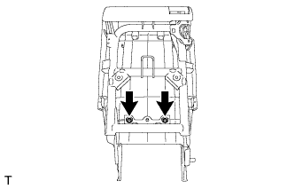
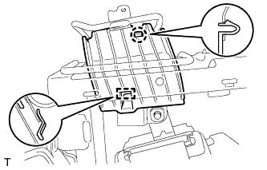
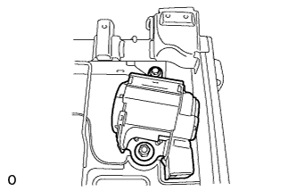

ЗАДНЕЕ СИДЕНЬЕ № 1 В СБОРЕ (складываемое вдвое раздельное сиденье 60/40 с правой стороны) > РАЗБОРКА |
| 1. СНИМИТЕ ПОДУШКУ ЗАДНЕГО СИДЕНЬЯ |
Выверните 2 винта и снимите 2 подушки.
| 2. СНИМИТЕ ЗАЩИТУ ЗАДНЕГО СИДЕНЬЯ |
Выверните 2 винта.
Освободите 2 крепления и снимите защиту.
| 3. СНИМИТЕ НИЖНЮЮ КРЫШКУ ПОДУШКИ ПРАВОГО ЗАДНЕГО СИДЕНЬЯ |
С помощью съемника молдингов расцепите крепления и снимите крышку.
| 4. СНИМИТЕ ОБИВКУ ПОДУШКИ СИДЕНЬЯ ВМЕСТЕ С ПОДУШКОЙ |
Отсоедините хомут подушки сиденья от обивки подушки сиденья.
Освободите крепления и снимите обивку подушки сиденья вместе с подушкой.
| 5. СНИМИТЕ ОБИВКУ ПОДУШКИ ПРАВОГО СИДЕНЬЯ № 1 |
Срежьте закрепки и снимите обивку с подушки сиденья.
| *1 | Стяжка |
| 6. СНИМИТЕ ОБИВКУ ПОДУШКИ РАЗДЕЛЬНОГО ПРАВОГО ЗАДНЕГО СИДЕНЬЯ |
Снимите витковые пружины и обивку подушки сиденья с подушки сиденья.
| 7. СНИМИТЕ ХОМУТ ПОДУШКИ ЗАДНЕГО СИДЕНЬЯ |
Снимите хомут, как показано на рисунке.
| 8. СНИМИТЕ ЩИТОК КРОНШТЕЙНА НОЖКИ ЗАДНЕГО СИДЕНЬЯ |
С помощью съемника молдингов расцепите 4 захвата и снимите крышку.
| 9. СНИМИТЕ НАКЛАДКУ НОЖКИ ЗАДНЕГО СИДЕНЬЯ |
Освободите захват и направляющую, а затем снимите накладку.
| 10. СНИМИТЕ ПАНЕЛЬ СПИНКИ СИДЕНЬЯ № 1 В СБОРЕ |
 |
С помощью съемника фиксаторов расцепите 3 фиксаторов.
Отсоедините направляющую и снимите панель.
| 11. СНИМИТЕ ВНУТРЕННЮЮ ОТКИДНУЮ КРЫШКУ ПРАВОГО ЗАДНЕГО СИДЕНЬЯ |
Выверните винт.
Освободите 2 направляющих и снимите крышку.
| 12. СНИМИТЕ ЗАМОК РЕМНЯ БЕЗОПАСНОСТИ ЗАДНЕГО ЦЕНТРАЛЬНОГО СИДЕНЬЯ В СБОРЕ |
 |
Отсоедините крепежную ленту и снимите ленту.
Отверните болт и снимите замок ремня безопасности.
| *1 | Ленточный хомут |
| 13. СНИМИТЕ ОБИВКУ СПИНКИ ЦЕНТРАЛЬНОГО СИДЕНЬЯ В СБОРЕ |
 |
Выверните винт.
Освободите 2 направляющих и снимите крышку.
| 14. СНИМИТЕ СПИНКУ ЦЕНТРАЛЬНОГО СИДЕНЬЯ В СБОРЕ |
 |
С помощью торцевого ключа с головкой "TORX" T45 выверните болт "TORX" и снимите втулку.
Выверните 2 болта и снимите спинку центрального сиденья.
| 15. СНИМИТЕ ЦЕНТРАЛЬНЫЙ ПОДГОЛОВНИК ЗАДНЕГО СИДЕНЬЯ В СБОРЕ |
Снимите подголовник.
| 16. СНИМИТЕ КРЫШКУ ПЕТЛИ ЦЕНТРАЛЬНОГО СИДЕНЬЯ |
Отцепите захват и снимите крышку.
| 17. СНИМИТЕ НАКЛАДКУ ОПОРЫ СПИНКИ ЛЕВОГО ЗАДНЕГО СИДЕНЬЯ |
 |
Отцепите 3 захвата и снимите обивку.
| 18. СНИМИТЕ НАКЛАДКУ ОПОРЫ СПИНКИ ПРАВОГО ЗАДНЕГО СИДЕНЬЯ |
С помощью торцевого ключа с головкой "TORX" T45 выверните болт "TORX" и снимите втулку и петлю.
Отцепите 3 захвата и снимите крышку.
| 19. СНИМИТЕ ЦЕНТРАЛЬНЫЙ ПОДЛОКОТНИК ЗАДНЕГО СИДЕНЬЯ В СБОРЕ |
С помощью торцевого ключа "TORX" T45 выверните 2 болта "TORX" и снимите 2 втулки и подлокотник.
Снимите втулку.
| 20. СНИМИТЕ ПРАВУЮ ПОДСТАВКУ ДЛЯ ЧАШКИ № 2 В СБОРЕ |
Снимите 2 подставки для чашек.
| 21. СНИМИТЕ ОБИВКУ СПИНКИ ЗАДНЕГО СИДЕНЬЯ |
 |
С помощью отвертки освободите 4 захвата и снимите обивку.
| 22. СНИМИТЕ КРЫШКУ ЗАМКА СПИНКИ ЗАДНЕГО СИДЕНЬЯ |
С помощью съемника молдингов расцепите захват.
Переместите крышку в направлении, указанном на рисунке стрелкой, чтобы освободить фиксатор и 2 направляющих, а затем снимите крышку.
| 23. СНИМИТЕ ПАНЕЛЬ СПИНКИ ЗАДНЕГО СИДЕНЬЯ В СБОРЕ |
Освободите 4 захвата и 3 фиксатора, а затем снимите панель.
| 24. СНИМИТЕ ДЕРЖАТЕЛЬ ПОДГОЛОВНИКА ЗАДНЕГО СИДЕНЬЯ |
Освободите 4 захвата и снимите 2 держателя.
| 25. СНИМИТЕ БОКОВУЮ НАКЛАДКУ № 2 ЗАДНЕГО СИДЕНЬЯ № 1 |
|  |
Выверните 2 винта.
С помощью съемника молдингов отцепите 3 захвата и снимите накладку.
| 26. СНИМИТЕ ЗАМОК ПРАВОГО ЗАДНЕГО СИДЕНЬЯ В СБОРЕ |
Освободите зажим и отсоедините жгут проводов.
Выверните 2 болта и снимите замок.
| 27. СНИМИТЕ ПРАВЫЙ РЫЧАГ ФИКСАЦИИ СПИНКИ ЗАДНЕГО СИДЕНЬЯ В СБОРЕ |
Выверните 2 винта и снимите рычаг.
| 28. СНИМИТЕ ОБИВКУ СПИНКИ ЦЕНТРАЛЬНОГО СИДЕНЬЯ № 2 |
 |
Выверните винт.
Отцепите 2 захвата и снимите накладку.
| 29. СНИМИТЕ КРЫШКУ ЗАМКА СПИНКИ ПРАВОГО ЗАДНЕГО СИДЕНЬЯ |
Выверните 2 винта.
Освободите 2 направляющих и снимите крышку.
| 30. СНИМИТЕ ЗАМОК СПИНКИ ПРАВОГО ЗАДНЕГО СИДЕНЬЯ В СБОРЕ |
Снимите 2 витковые пружины.
Выверните 2 болта.
Перемещая кнопку разблокировки в направлении, указанном на рисунке стрелкой, отсоедините ее от втулки и снимите замок спинки сиденья.
| 31. СНИМИТЕ КНОПКУ РАЗБЛОКИРОВКИ ЗАМКА СПИНКИ ЗАДНЕГО СИДЕНЬЯ |
 |
Снимите кнопку разблокировки, как показано на рисунке.
 | Против часовой стрелки |
| 32. СНИМИТЕ ИЗОЛИРУЮЩУЮ ВТУЛКУ КНОПКИ ОСТАНОВА СПИНКИ ЗАДНЕГО СИДЕНЬЯ |
 |
Отсоедините 3 захвата и снимите втулку.
| 33. СНИМИТЕ ДЕРЖАТЕЛЬ ПОДГОЛОВНИКА ЗАДНЕГО СИДЕНЬЯ № 1 В СБОРЕ |
 |
Освободите 4 захвата и снимите 2 держателя.
| 34. СНИМИТЕ КРЫШКУ КРЕПЛЕНИЯ РЕМНЯ БЕЗОПАСНОСТИ |
 |
С помощью отвертки освободите 2 захвата и 2 направляющих, а затем снимите крышку.
| *1 | Защитная клейкая лента |
| 35. СНИМИТЕ КРЫШКУ ПЛЕЧЕВОГО КРЕПЛЕНИЯ РЕМНЯ ЗАДНЕГО СИДЕНЬЯ |
 |
Выверните винт.
Отцепите 3 захвата и снимите обивку.
Отсоедините ремень безопасности от крышки.
| 36. СНИМИТЕ КОЛПАЧОК ЗАЩЕЛКИ ЗАМКА СПИНКИ ЗАДНЕГО СИДЕНЬЯ |
 |
Снимите колпачок с защелки.
| 37. СНИМИТЕ ЗАЩЕЛКУ ЗАМКА ЗАДНЕГО СИДЕНЬЯ |
Снимите защелку с помощью торцевого ключа с головкой "TORX" T45.
| 38. СНИМИТЕ ОБИВКУ СПИНКИ СИДЕНЬЯ ВМЕСТЕ С ПОДУШКОЙ |
Снимите витковые пружины, освободите крепление, а затем снимите обивку спинки сиденья с подушкой.
| *1 | Крюк |
| *2 | Витковая пружина |
Отсоедините ремень безопасности от обивки спинки сиденья с подушкой.
| 39. СНИМИТЕ ОБИВКУ СПИНКИ ПРАВОГО РАЗДЕЛЬНОГО ЗАДНЕГО СИДЕНЬЯ |
Снимите витковые пружины и обивку с подушки спинки сиденья.
| 40. СНИМИТЕ КРАЕВОЕ УКРЕПЛЕНИЕ СПИНКИ ЗАДНЕГО СИДЕНЬЯ |
Отсоедините защитный элемент от рамы спинки сиденья.
| 41. СНИМИТЕ НАПРАВЛЯЮЩУЮ ПЛЕЧЕВОГО КРЕПЛЕНИЯ РЕМНЯ ЗАДНЕГО СИДЕНЬЯ |
|  |
Освободите захват и направляющую, а затем снимите направляющую ремня.
| 42. СНИМИТЕ ПРАВЫЙ 3-ТОЧЕЧНЫЙ РЕМЕНЬ БЕЗОПАСНОСТИ СИДЕНЬЯ № 1 В СБОРЕ |
|  |
Отверните гайку, выверните болт, освободите 2 захвата и снимите ремень безопасности.
| 43. СНИМИТЕ ЭЛЕМЕНТ ЗАЩИТЫ ЛЕВОГО ЗАДНЕГО СИДЕНЬЯ № 1 |
Открепите 2 захвата и снимите элемент защиты.
| 44. СНИМИТЕ ЭЛЕМЕНТ ЗАЩИТЫ ПРАВОГО ЗАДНЕГО СИДЕНЬЯ № 1 |
Отцепите захват и снимите элемент защиты.